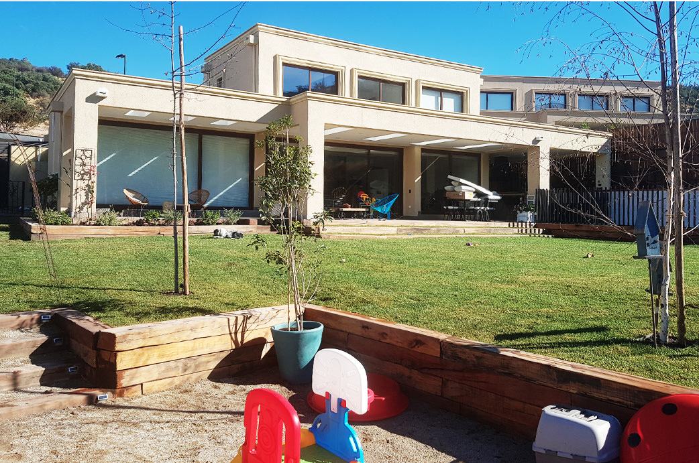
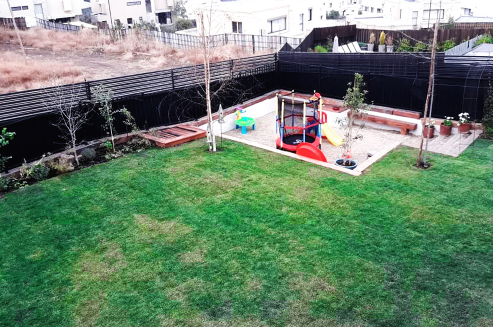
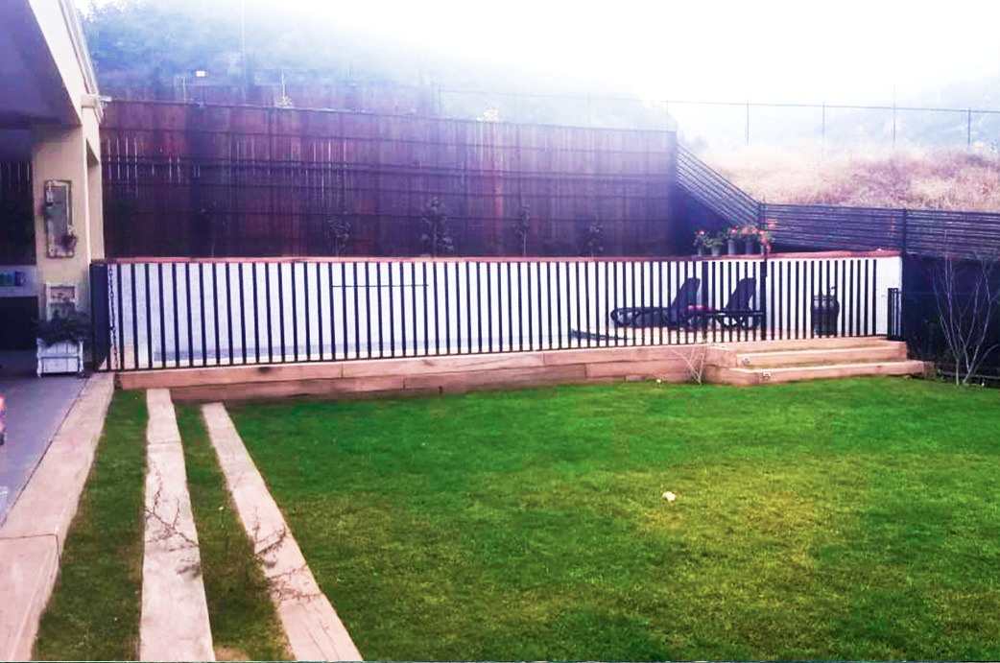

<div class="container project-view">

    <div class="row">
        <div class="col-md-8 project-images">
            
            
            
        </div>
        <div class="col-md-4">
            <div class="project-info">
                <h2 align="center" style="color:rgb(162, 94, 92)" > Exteriores Los Litres</h2>

                <div class="details">
                    <div class="info-text">
                        <span class="title">Proyecto:</span>
                        <span class="val" style="color:rgb(162, 94, 92)"> Exteriores Los Litres</span>
                    </div>
                    <div class="info-text">
                        <span class="title">Ubicación:</span>
                        <span class="val" style="color:rgb(162, 94, 92)">Lo Barnechea, Santiago.</span>
                    </div>
                    <div class="info-text">
                        <span class="title">Año:</span>
                        <span class="val" style="color:rgb(162, 94, 92)">2018</span>
                    </div>
                    <div class="info-text">
                        <span class="title">Superficie:</span>
                        <span class="val" style="color:rgb(162, 94, 92)">m2: 400 m2</span>
                    </div>
                </div>
                <h4  style="color:rgb(162, 94, 92)">Descripción</h4>
                <p align="justify">
                En esta casa nos dedicamos a crear espacios para la familia pensando siempre en que cada uno de sus integrantes disfrute al máximo su nuevo hogar. Es así como nuestros clientes quedaron felices con el área de juegos para niños, la piscina, terraza y quincho. Para lograr este resultado rellenamos y excavamos todo el terreno según la necesidad de cada espacio y lo acondicionamos con distintas materialidades según su uso. Es así como logramos reemplazar la pendiente existente por un patio continuo apto para juegos y áreas de descanso.</p>

                
                </p>
                        
                        
            </div>
        </div>
    </div>
</div>
